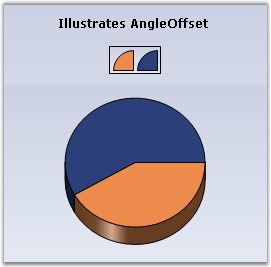
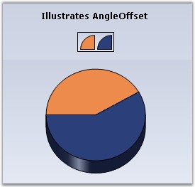

The offset angle that is to be used when rendering Pie charts.
|
Details | |
|
Possible Values |
Accepts real values like 45f, 90f etc. |
|
Default Value |
0 |
|
2D / 3D Limitations |
No |
|
Applies to Chart Element |
All Series |
|
Applies to Chart Types |
PieChart |
Here is some sample code.
|
[C#]
// Create chart series and add data points into it. ChartSeries series1 = this.chartControl1.Model.NewSeries("Market"); series1.Points.Add(0, 20); series1.Points.Add(1, 28); series1.Type = ChartSeriesType.Pie; // Add the series to the chart series collection. this.chartControl1.Series.Add(series1);
this.chartControl1.Series3D = true; this.chartControl1.Series[0].ConfigItems.PieItem.AngleOffset = 45f; |
|
[VB.NET]
' Create chart series and add data points into it. Private series1 As ChartSeries = Me.chartControl1.Model.NewSeries("Market") series1.Points.Add(0, 20) series1.Points.Add(1, 28) series1.Type = ChartSeriesType.Pie ' Add the series to the chart series collection. Me.chartControl1.Series.Add(series1)
Me.chartControl1.Series3D = True Me.chartControl1.Series(0).ConfigItems.PieItem.AngleOffset = 45f |

Figure 95: PieChart with No AngleOffset

Figure 96: PieChart with AngleOffset = "45f"
See Also